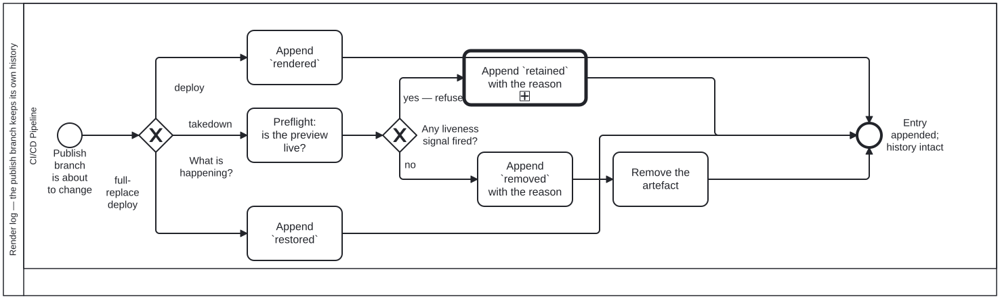

Generated from
cat-harness/processes/ui/staging-render-log.bpmnbygen-processes-viz.ts— do not edit here. All processes
Process_RenderLog · strict · 6 step(s)
Every change to the publish branch appends an entry to _render-log/<day>.jsonl. A removal is a NEW entry, never the erasure of the rendered one before it — the pair is the history. The lane is the build pipeline because every writer is a workflow job; no agent decides what goes in this log. A system lane runs a fixed program and exercises no judgement, which is exactly what an append-only log wants.
The question it exists to answer: what happened to STAGING/

| lane | role | what it does here |
|---|---|---|
| CI/CD Pipeline | build-pipeline |
Every branch of GW_What — deploy, takedown, full-replace — is logged by this same lane regardless of which is firing, and the ORDER matters as much as the fact: A_LogRemoved happens before A_Remove specifically so a job that dies mid-step leaves a record of intent rather than an artefact that vanished with nothing said about it. |
Every one of the 6 step(s) is documented.
| step | lane | skill / sub-process | what it does |
|---|---|---|---|
Append renderedA_LogRendered |
CI/CD Pipeline | render-logging |
A re-deploy is a rendering, so it gets its own entry rather than overwriting the last. “When was this last built” is then answerable without diffing commits. |
Preflight: is the preview live?A_Preflight |
CI/CD Pipeline | render-logging |
previewLiveness — a disjunction over open-pr, unmerged-branch and recent-commit, shared with the health sweep so the two cannot disagree. Bean w2g5: a preview whose pull request is closed is NOT an abandoned one. |
Append retained with the reasonA_LogRetained |
CI/CD Pipeline | render-logging |
THE ENTRY THAT MAKES THE LOG WORTH READING. A preview still standing because a signal fired leaves no trace otherwise, and the next person asking “why is this still up” has nothing to consult. A reason is REQUIRED — the tool refuses without one. |
Append removed with the reasonA_LogRemoved |
CI/CD Pipeline | render-logging |
BEFORE the removal, not after: a job that dies mid-step must leave a record of the intent rather than an artefact that vanished with no entry. A reason is REQUIRED — an entry saying an artefact went and not why is the ambiguity this log exists to prevent. |
Remove the artefactA_Remove |
CI/CD Pipeline | render-logging |
rm -rf STAGING/<slug>. Cannot reach the log, which lives outside STAGING/ — structural rather than guarded, because a branch named to collide with a directory under STAGING/ slugifies to exactly that name and git permits the ref. |
Append restoredA_LogRestored |
CI/CD Pipeline | render-logging |
A full-replace deploy (docs-site.yml, the only publisher without keep_files) wipes the branch; restore-staging carries the previews AND this log back in. Its own event rather than a second rendered, because “somebody pushed this branch” and “an unrelated merge nearly deleted it” are different facts — and bean plj1 is what happens when the second is invisible. |
Every one of the 2 decision(s) is documented.
| decision | what decides it | branches |
|---|---|---|
What is happening?GW_What |
What is about to happen to the publish branch? A deploy appends rendered; a takedown first preflights whether the preview is live; a full-replace deploy appends restored for the previews it put back. |
deploy → Append renderedtakedown → Preflight: is the preview live? full-replace deploy → Append restored |
Any liveness signal fired?GW_Live |
Answered by the preflight: did any liveness signal fire for this preview? yes — refuse keeps it and appends retained with the reason; no removes it and appends removed with the reason. |
yes — refuse → Append retained with the reasonno → Append removed with the reason |